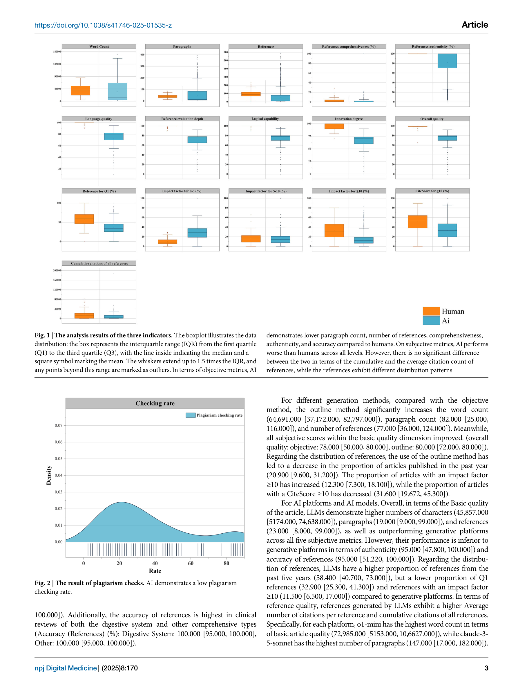
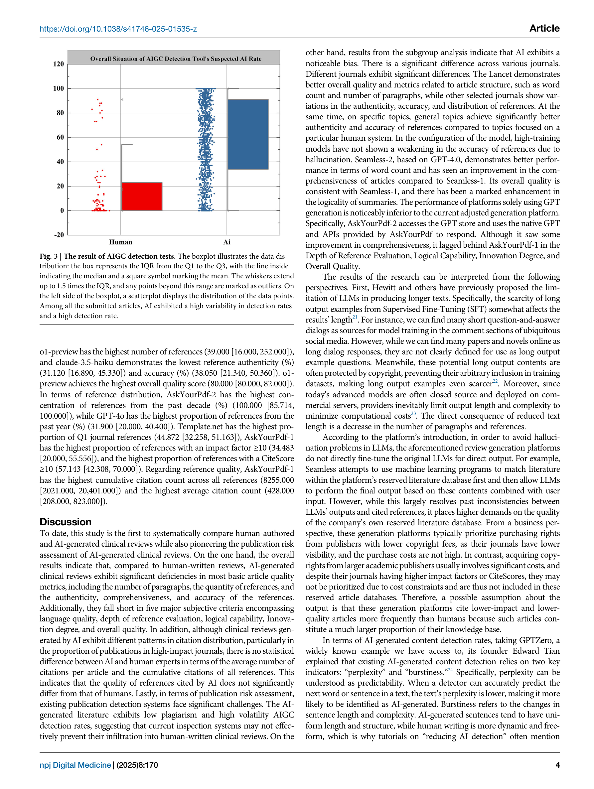
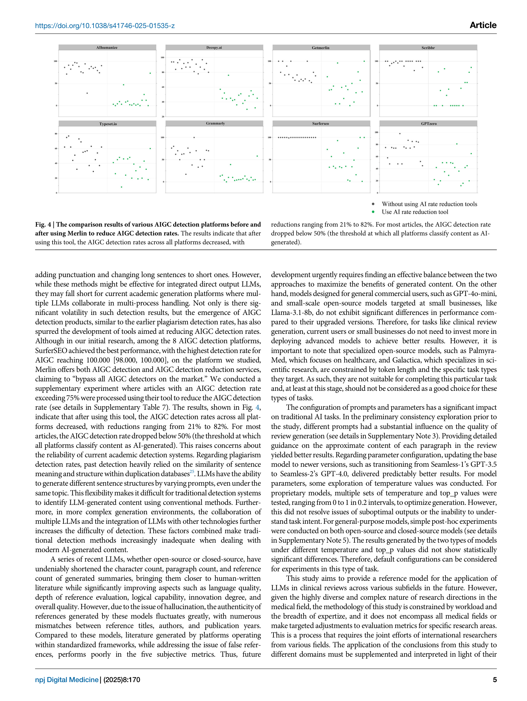
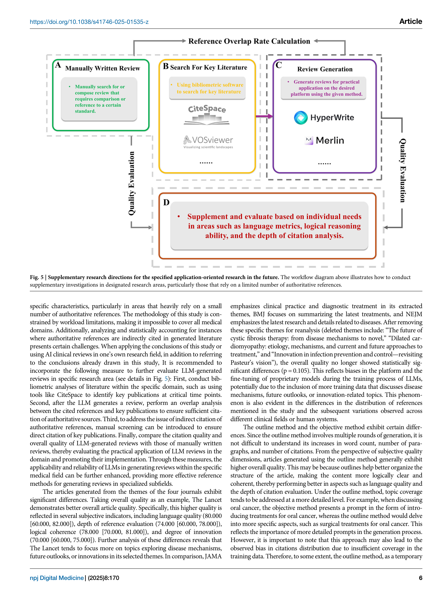

메타 정보
- 저자: Zining Luo, Yang Qiao, Xinyu Xu 외 14명 (North Sichuan Medical College / University of Glasgow / UESTC)
- 저널/출처: npj Digital Medicine, 8, 170
- DOI: 10.1038/s41746-025-01535-z
- 발표일: 2025-03-19

Figure 1

Figure 2
Figure 1

Figure 2
LLM 기반 리뷰 생성 플랫폼과 13개 주요 LLM이 작성한 2,169편의 임상 리뷰를 인간 작성 리뷰와 체계적으로 비교한 결과, AI 리뷰는 참고문헌 수, 포괄성, 논리적 일관성, 혁신성에서 인간에 크게 미치지 못하며, 기존 표절/AIGC 탐지 시스템도 AI 생성 리뷰를 효과적으로 차단하지 못한다는 것을 밝힌 대규모 파일럿 연구.

Figure 3

Figure 4

Figure 5
2,169편의 AI 리뷰를 4개 차원에서 평가한 이 연구의 규모와 체계성은 인상적이다. 특히 리뷰 생성 플랫폼과 순수 LLM을 함께 비교한 설계는, 플랫폼이 hallucination을 해결하면서도 주관적 품질은 오히려 낮아지는 딜레마를 선명하게 보여준다. AIGC 탐지 시스템의 무력화 실험(Merlin 활용)은 학술 출판계에 대한 시의적절한 경고다. 다만, 벤치마크가 NEJM/Lancet 등 최고 수준 저널의 리뷰라는 점에서 AI와 인간의 격차가 과대평가되었을 가능성이 있으며, "평균적 인간 저자"와의 비교가 보완되면 더 균형 잡힌 결론을 도출할 수 있을 것이다. 전문가 평가의 주관적 점수(0-100)가 인간 리뷰에 거의 만점을 부여한 점도 천장 효과(ceiling effect)의 가능성을 시사한다.